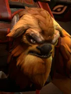
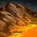

Fissure
Active
Slams the ground with a mighty totem, creating an impassable ridge of stone. Enemy chess pieces along the line are stunned and knocked to the nearest vacant squares, and suffer physical damage.
| ★ | ★★ | ★★★ | |
|---|---|---|---|
| DURATION | 6 | 8 | 12 |
| STUN DURATION | 2 | 3 | 4 |
| PHYSICAL DAMAGE | 100 | 200 | 400 |
| Cooldown (s) | 10 | 8 | 6 |
| Mana cost | 75 | ||
The Nishian totem splits the world to its core with tectonic force.
Stats
| ★ | ★★ | ★★★ | |
|---|---|---|---|
| Health | 700 | 1400 | 2800 |
| Mana | 100 | 100 | 100 |
| Armor | 6 | 6 | 6 |
| Magic resistance | 0% | 0% | 0% |
| Attack damage | 80–120 | 160–240 | 320–480 |
| Attack interval (s) | 1.4 | 1.4 | 1.4 |
| Attack range | 205 | 205 | 205 |
| Move speed | 500 | 500 | 500 |
Tauren · Totem of the Clan
- (2) Summons a Scarecrow Totem that taunts enemies. Its HP is 2.5 x the number of enemy pieces (counting up to 8, so max 20).
- (4) Also summons a Woodpecker Totem (29% chance when an enemy casts: silence 3s + 200 magic damage) and a Horn Totem (10% chance when an enemy attacks: disarm 2s + 100 physical damage). Their HP equals the number of enemy pieces (max 8).
 Shaman · Hex
Shaman · Hex
Shamans cast their skill with 75% of the normal mana.
- (3) After casting its skill or using an active item, a Shaman spends about 1.25s transforming into a random piece 2 levels higher (capped by your courier level and at 9). The new form has no items (your items are kept safe) and dies after 20-25 seconds.
- (6) The transformed piece keeps its items, but each one becomes a random item 2 tiers higher.